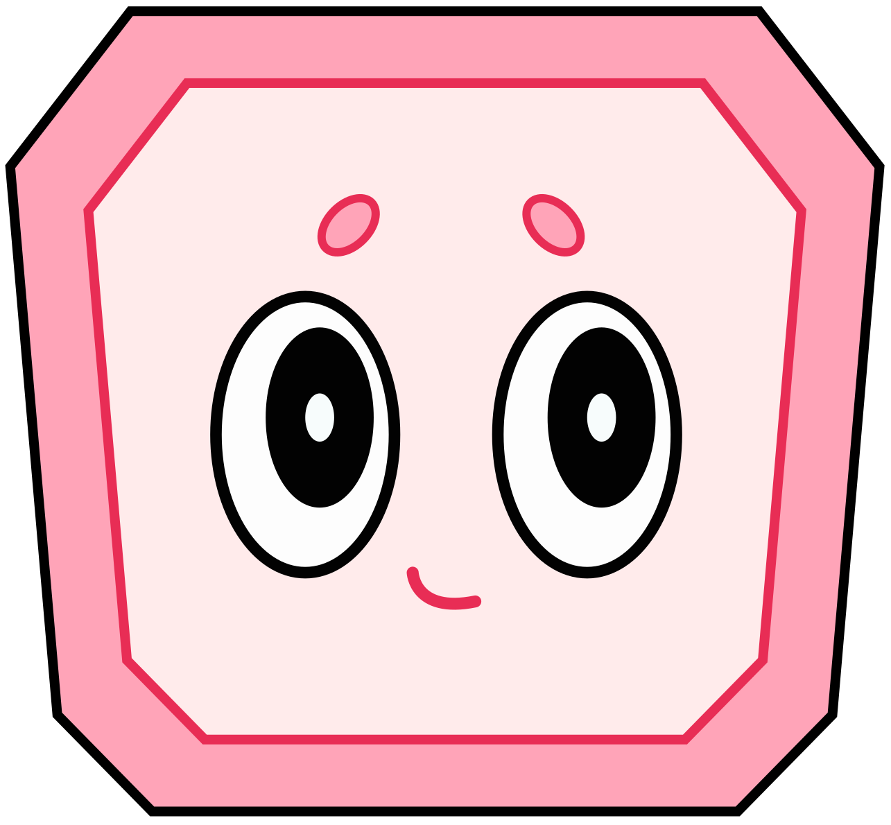

Coloro có chiều sâu
Mẫu thử chưa duyệt. Ba mặt phẳng dùng cùng SVG chính thức để thử hiệu ứng nổi. Mẫu này tách riêng khỏi ứng dụng.

Đang hiển thị góc nhìn tĩnh.
Mẫu thử chưa duyệt. Ba mặt phẳng dùng cùng SVG chính thức để thử hiệu ứng nổi. Mẫu này tách riêng khỏi ứng dụng.

Đang hiển thị góc nhìn tĩnh.